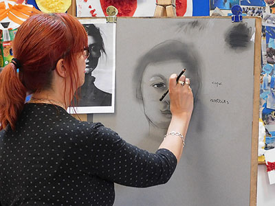
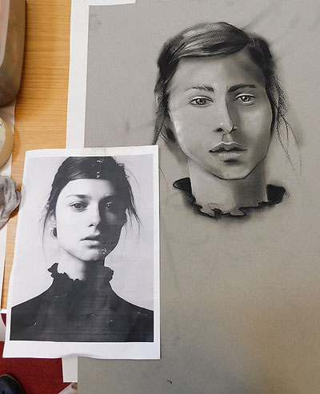
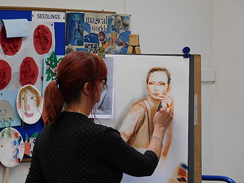
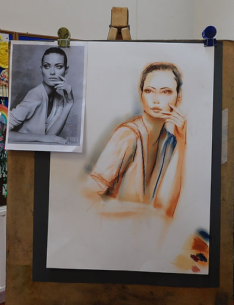

Contents:
- Winter Programme (September-April)
- Summer Programme (May-August)
- Demonstration Programme
- Our latest demonstration
- Our location
Winter Programme
Members meet every Wednesday in Ferring Village Hall, 9:30-11:30 A.M.
| Date | Subject | |
|---|---|---|
| Sep 4th | Bring in a picture, e.g. Cezanne, Gaugin, Matisse Paint/work in the style of | |
| Sep 11th | Bring in Wood-working tools/Artist materials and draw in pencil | |
| Sep 18th | Project Sketchbook, develop & experiment with the subject drawn last week | |
| Sep 25th | Final Work Show & discuss work & Summer Sketches/paintings |
|
| Oct 2nd | Draw eyes, noses, lips and ears of willing members in pencil | |
| Oct 9th | Project Sketchbook analyse and develop ideas and experiment | |
| Oct 16th | Project Sketchbook/Final work (with masks, king/queen included perhaps) | |
| Oct 23rd | Dog posing | |
| Oct 30th | Use this month’s sketches for experimenting/Final Work Show & discuss work |
|
| Nov 6th | Bring in a picture, e.g. Rembrandt, Vermeer, Breughel Work/paint in the style of | |
| Nov 13th | Bring in leaves, seed-heads, acorns, fungi and draw in pencil | |
| Nov 20th | Project sketchbook work on and develop last week’s subject | |
| Nov 27th | Final Work/or ‘Christmas bauble on ribbon’ Show and discuss work |
|
| Dec 4th | Nude posing, look at the model 90% of the time | |
| Dec 11th | Bring in Handbag & contents, purse, coins, to draw in pencil | |
| Jan 1st | Snow-scape, in the style of Monet, Sisley, Pissarro | |
| Jan 8th | Bring in Feathers, shells, driftwood, beach found objects | |
| Jan 15th | Project Sketchbook, experiment and develop the subject above | |
| Jan 22nd | Final work/ or ‘House of Dreams’, make a start and finish next week | |
| Jan 29th | ‘House of Dreams’, design, collage, draw, paint Show & discuss work |
|
| Feb 5th | Dog posing | |
| Feb 12th | Bring in Glass objects | |
| Feb 19th | Project Sketchbook, (Ice chards, crystal, rainbows, refraction) & develop ideas | |
| Feb 26th | Final Work/ or ‘Trees in four seasons’
Show & discuss work |
|
| Mar 4th | Work in the style of your favourite painter, bring in a picture | |
| Mar 11th | Bring in Flowers/plant/vase and draw in pencil/watercolour | |
| Mar 18th | Project Sketchbook, experiment, large detail/other ideas | |
| Mar 25th | Final work/ or ‘Design a garden’, any way you like Show and discuss work |
|
| Apr 1st | Nude model | |
| Apr 8th | Bring in Keys and locks and draw in pencil | |
| Apr 15th | Project Sketchbook, work out ideas | |
| Apr 22nd | Final work/or ‘Meeting and Greeting’ | |
| Apr 29th | Show and discuss work | |
| May 1st | Outdoor painting begins | |
For ‘Drawing Objects’, ‘Art Project Sketchbook’ and ‘Final Work’ explanations, PTO.
Summer Programme 2019
Members meet in different locations every week to sketch and paint outside.
Wednesday mornings 9:30 A.M.-12:00 Noon.
| Date | Venue | Painting Ideas | Meeting/Parking |
|---|---|---|---|
| May 1st | Nepcote Green Findon village | Village Green, Cottages Downland views | Parking off road adjacent to Nepcote green. Pub+rest. in Findon village |
| May 8th | Swanbourne Lake | Views, wildfowl, people | Parking Mill Rd. Arundel.Tearoom/toilet/th> |
| May 15th | Ham Manor Golfcourse | Views over golf course from terrace, refreshm. | A259, Mill Ln roundabout, N into Golfers Ln. BN16 4JE |
| May 22nd | Coombes Church Park near church | Tiny church, rectory cottages, views. £1 pp. | Coombes Road off A27 opp. Airport. Coombes farm entrance left, to church |
| May 29th | West Burton House Susan Middlemas Permission to stay on after lunch. | House & magnificent garden with Downland views, follies, topiary. Under cover if wet/windy | Turn off A29 into W. Burton La. KEEP STRAIGHT ON 0.8 miles, - ignore Bignore sign -, enter ‘No through road’, entrance is on left. Parking, toilet. |
| Jun 5th | Bailiffscourt Hotel and Spa BN17 5RW* | Hotel grounds, building, beach nearby | Turn left off A259 Climping Rd., at Hotel sign, into Climping Str. Till Hotel Sign. Parking, Refreshments, toilets |
| Jun 12th | Upper Broomhurst Farm. (Top of hill) | Views to Arundel, chickens, cottage | A27 to Arundel, entrance turn left opp. Beefeater Crossbush. Parking/toilets |
| Jun 19th | West Worthing Marine Gardens | Marine gardens Beach across road. | Park on road where you can. café/restaurant toilets BN11 5EF |
| Jun 26th | Parham Grounds RH20 4HR | Elizabethan Mansion, church, views to Downs. Grounds only | Turn into grounds in bend of A283 Pulborough Road, West of Storrington Free parking near mansion |
| Jul 3rd | Highdown Gardens OPENS at 10 | Chalkpit garden, trees, shrubs, flowers, ponds | Parking, toilet, tearoom/restaurant (Meeting, committee members pm.) |
| Jul 10th | Arun river from South side, by Lido | Views of castle, river, boats. (Sensible shoes) | Pay Cp. at Lido pool, alley to river on left of pool. Tearms/rests in Arundel |
| Jul 17th | Allotment Gardens Worthing | Sheds, pots, vegetables and flowers | On road parking, entrance at end of Ringmer Road, Worthing. Toilets. Arrive 9.30 PROMPTLY to be admitted |
| Jul 24th | Black Rabbit, Mill Road, Arundel | River views, reflections | Car park, refreshments/food, toilet |
| July 31st-August 6th | Annual Art Exhibition - Ferring Village Hall | ||
| Aug 7th | Arun Yacht Club Littlehampton | Club pontoons, sandy foreshore, river, boats | A259, West of river, Ferry rd., Rope Walk. Clubhouse, free parking, toilets |
| Aug 14th | Angmering Village Centre | Village centre, adjacent roads and church | Park near church/shops. Two excellent pubs in village. |
| Aug 21st | Mill Farm Fisheries RH20 1HF | Lakes, fishermen and women, views | A29 North of Bury, left B2138, directly left Bignor rd. Cp. 250 yards on left |
| Aug 28th | Lancing College | College and chapel facades, views | N. of A27 opposite airport. Parking in visitors cp. |
| Sep 4th | Back to Village Hall for Winter Programme | ||
Demonstration Meetings
Art demonstration meetings are held on the third Saturday of every month at
Ferring Village Hall, 2.30-4:30 p.m.,
and visitors are welcome at these (£5 per meeting).
Demonstration Programme 2019/20
| 2019 | 2019 cont'd | ||
|---|---|---|---|
| May 18th | Jo Louca "City Night Scene" (watercolour) | Sep 21st | Liz Seward "Still Life" (watercolour) |
| June 15th | Debbie Hinks
"Clothed figures" (pastel) (this demo will be held in St. Andrew's Church Hall) |
Oct 19th | David Henty "No intent to deceive" (oils) |
| TBC | Exhibition of members work in Ferring Village Hall | Nov 16th | Joel Wareing "Figures in sunlight in an urban setting" (pastel) |
| 2020 | |||
| Jan 18th | Roger Dellar "Interior scene with figures" (oils) | ||
| Feb 15th | Sera Knight "Dance" (acrylic and collage) | ||
| Mar 21st | Marcus Finch
"Landscape workshop" (acrylic) (this workshop will run from 11am to 5pm and will be held in St. Andrew's Church Hall) |
||
| Apr 18th | AGM |
Our latest demonstration
Clothed Figures in Pastel by Debbie Hinks
Despite a temporary change of venue, to St Andrews Church Centre, the demonstration was well attended, boosted by 10 guests. Debbie is a professional artist and illustrator, and has taught at Northbrook Colllege. She now runs life drawing classes and sessions in the Brighton area.
Debbie gave us a summary of her career to date, sharing examples of her illustration work. It is amazing how large the original work is, before being reduced to book cover size.
After a brief description of her materials, Debbie warmed up for the main event, by demonstrating a portrait in charcoal. She explained that in addition to the usual willow charcoal, she used condensed charcoal (more intense/darker) and even white charcoal. She worked on grey Fabriano Tiziano paper, and used an interesting technique with cotton wool to apply charcoal dust for subtle toning on the face.

Debbie then started to work on the details with charcoal pencils. She sharpens all her pencils with a scalpel to achieve the point she wants. A plastic rubber is used to lift off, and can also be shaped for fine work. By the break she had completed a very striking image.

After the break Debbie started to work on a figure drawing, using a piece of off-white Fabriano Tiziano paper. Initially she used a sanguine Conte pastel pencil to compose the figure on the page. Once happy with the composition she rapidly sketched out the main elements, using relative angles and paying partcular attention to the negative spaces. She then took care with the face, especially the eyes. Again the cotton wool was used to apply tone to the face and the picture as a whole. She switched from the peach /burnt sienna colours to a dark blue to add in the darks and the image started to appear three-dimensional.

Highlights were added and Debbie used a cotton bud to apply tone with more precision. In a suprisingly short time a finished image appeared before our eyes.

Debbie engaged with the audience throughout the presentation, and everyone seemed to enjoy the session. Many said that they had learnt new skills. A thoroughly enjoyable afternooon for our last demonstration before the summer break. See you again in September.
Click here to see some of our previous demonstrations!
Location of Ferring Village Hall
Address: Ferring Street, Ferring, West Sussex, BN12 5JP
Map:
Click here to see this on Google Maps!